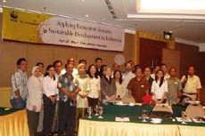

Sumatra, Indonesia

This page has not been created yet. Please check back soon for more information.
Publications
Integrating Ecosystem Services into Spatial Planning in Sumatra, Indonesia
Thomas Barano, Emily McKenzie, Nirmal Bhagabati, Marc Conte, Driss Ennaanay, Oki Hadian, Nasser Olwero, Heather Tallis, Stacie Wolny, Ginny Ng
TEEBcase (2010)
Download from www.eea.europa.eu/teeb
Iván Darío Valencia
Not Peer-reviewed: Scholarly Paper for Graduate Studies University of Maryland. (August 2009)